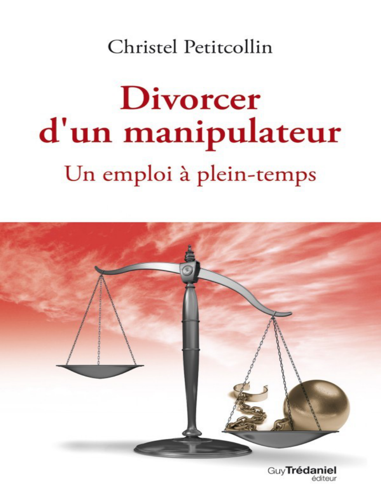

Divorcer d’un manipulateur
Christel Petitcollin
Savoirs · Psychologie
201 pages PDF
Résumé général
L’ouvrage examine les mécanismes d’emprise dans une relation, les difficultés de la séparation et les conséquences d’un divorce avec une personne manipulatrice.
Chapitres et pages
Du même auteur — PDF p. 4
Résumé non encore vérifié à partir du texte intégral.
Introduction — PDF p. 8
Résumé non encore vérifié à partir du texte intégral.
Chapitre 1 — De la rencontre à la décision de partir — PDF p. 19
Résumé non encore vérifié à partir du texte intégral.
Chapitre 2 — Qui sont les manipulateurs ? — PDF p. 35
Résumé non encore vérifié à partir du texte intégral.
Chapitre 3 — Qui sont les victimes de manipulation ? — PDF p. 72
Résumé non encore vérifié à partir du texte intégral.
Chapitre 4 — Terminer la sortie d’emprise psychologique — PDF p. 104
Résumé non encore vérifié à partir du texte intégral.
Chapitre 5 — Préparer son évasion — PDF p. 131
Résumé non encore vérifié à partir du texte intégral.
Chapitre 6 — Bien comprendre l’appareil judiciaire — PDF p. 151
Résumé non encore vérifié à partir du texte intégral.
Chapitre 7 — Gérer la pression au décollage — PDF p. 191
Résumé non encore vérifié à partir du texte intégral.
Conclusion — Il y a une vie après ce divorce ! — PDF p. 198
Résumé non encore vérifié à partir du texte intégral.
Critiques externes
Lecteur PDF privé
Le lecteur intégré utilise la prise en charge PDF de ton navigateur. Si l’affichage intégré est bloqué sur ton téléphone, utilise le lien « Ouvrir le PDF ».